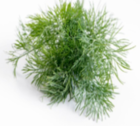
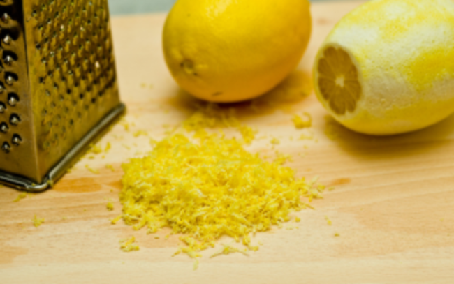

My Simple and Healthy Habits

How I Use My List Of Basic Items
- Fruits
Fruits hold a very important role in my daily eating habits. When referring to fruits, who does not know what it is about.
However, I have a golden list. Fruits such as Mango, Pineapple, pear, banana, soursop, avocado, papaya, cantaloupe and
the berries taste stronger and cover up most flavors; when added to a smoothie, for example, it is smoother.
If for any raison, they are bought in excess, no problem. They can be cut and frozen. They still keep their smooth texture.
Tired of drinking plain water, no problem, they can be used for fruit tea: fruit soaked in hot water. That does not mean apple,
kiwi and oranges etc. are not good. They are not just as useful as the ones in my golden list.
- Spices And Herbs
Aside from being convenient, take out, particularly, fast foods taste good. They flatter our taste buds.
The secret to food taste is spices. Fresh or dry and natural, I use them a lot to enhance my meals.
Nobody should be afraid to go across cultures to experience any spice use and taste.
Research their uses and prepare any meal with a fast food taste. Mix spices and make spices broth to prepare any meal. A steamer is very
handy for spice br
When it comes to dry spices, make sure they are safe. According to social media, some countries
prepare their dry species in fishy conditions.



- Roots and Vegetables
To be continued